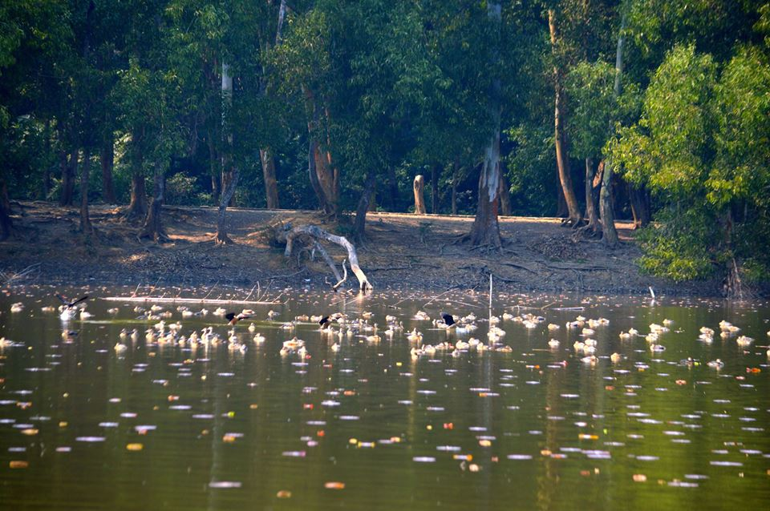
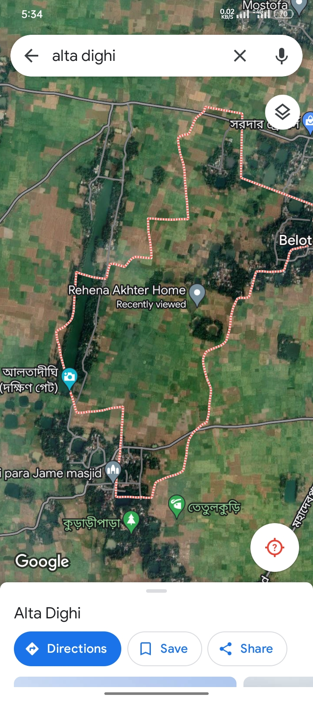

Alta Dighi Alta আলতাদিঘী জাতীয় উদ্যান নওগাঁ জেলার ধামইরহাট উপজেলায় অবস্থিত একটি জাতীয় উদ্যান। এই উপজেলায় আলতাদিঘী নামের একটি দিঘীকে কেন্দ্র করে গড়ে উঠেছে সুবিশাল বনভূমি। শালবন এবং বিভিন্ন প্রজাতির উদ্ভিদে পরিপূর্ণ ২৬৪.১২ হেক্টর জমির এই বনভূমির ঠিক মাঝখানেই রয়েছে প্রায় ৪৩ একর আয়তনের সেই বিশাল দিঘী। পরিবেশ ও বন মন্ত্রণালয় ২০১১ সালে এটিকে 'আলতাদিঘী জাতীয় উদ্যান' হিসাবে ঘোষণা করেছে। ২০১১ সালের ২৪ ডিসেম্বর এটি প্রতিষ্ঠিত হয়। এছাড়াও জাতীয় উদ্যানের পশের ১৭.৩৪ হেক্টর বনভুমিকে ৯ জুন ২০১৬ তারিখে বাংলাদেশের বন অধিদপ্তর বিশেষ জীববৈচিত্র্য সংরক্ষণ এলাকা ঘোষণা করে।

Naogaon, Bangladesh.
আলতাদিঘীটি বাংলাদেশ-ভারত সীমান্তবর্তী অংশে অবস্থিত একটি প্রাচীন জলাশয়। দিঘীটির আয়তন ৪৩ একর। এই জলাশয় দৈর্ঘ্যে ১১০০ মিটার এবং প্রস্থে ৫০০ মিটার। পাহাড়ের মতো পাড়গুলি উঁচু এবং দক্ষিণ পাড় শালবনে ঢাকা। প্রাচীন দিঘীগুলির মধ্যে এটিই বোধ হয় বাংলাদেশের সর্ববৃহৎ সচল দিঘী। উল্লেখ্য বিশাল দিঘী রামসাগরের দৈর্ঘ্য এটির চেয়ে ১৫০ মিটার বেশি হলেও চওড়ায় ১৫০ মিটার কম। আর রামসাগর ১৭৫০ সালের দিকে খনন করা হয়। কিন্তু আলতাদিঘী হিন্দু-বৌদ্ধ যুগের দিঘী।
আলতাদিঘী জাতীয় উদ্যানে মেছোবাঘ, গন্ধগোকুল, শিয়াল, অজগর ও বানর পাওয়া যায়। এছাড়াও বিভিন্ন প্রজাতির পাখি, পোকামাকড়সহ নানা প্রজাতির জীববৈচিত্র্য রয়েছে। বিশেষত শালগাছকে আলিঙ্গণ করে গড়ে ওঠা উঁই পোকার ঢিবিগুলো সবচেয়ে আকর্ষণীয়।
স্থানীয় মানুষের মুখে একটা লোককাহিনী প্রচলিত আছে যে, প্রজা সাধারণের পানিয়জলের সংকট নিরসনকল্পে , রাজা বিশ্বনাথ রাজমাতার সন্তুষ্টিকল্পে দীঘিটি খনন করেন। রাজমাতার শর্ত ছিল যে, তিনি পায়ে হেঁটে যতদূর অবধি যেতে পারবেন সেই পর্যন্ত দীঘিটি খনন করতে হবে। রাজমাতার শর্ত পূরণের বিষয়ে মন্ত্রীবরের সঙ্গে রাজা পরামর্শ করে আলতা নিয়ে আসেন। অতঃপর, একদিন ঘটা করে মন্ত্রীবরের সবাই রাজমাতা কে অনুসরণ করেন এবং রাজমাতা হাঁটতে শুরু করেন। কিন্তু রাজমাতার হাটা আর শেষ হয়না, তিনি হাঁটতেই থাকেন । তারপর, পরিস্থিতি প্রতিকুল দেখে মন্ত্রীবর দীঘির শেষ প্রান্তে রাজমাতার পায়ে আলতা ছিটিয়ে দিয়ে তাকে থামিয়ে দেন এই বলে যে, মা তোমার পা ফেটে রক্ত বেরিয়েছে। তুমি আর হাঁটতে পারবে না। যেই স্থানে গিয়ে রাজমাতা হাটা বন্ধ করেছিলেন , শুরুর স্থান থেকে সেই অবধি পর্যন্ত রাজা বিশ্বনাথ দীঘি খনন করেছিলেন। সেই থেকেই এই দীঘিটি আলতা দীঘি নামে হিসেবে পরিচিতি লাভ করে। ইতিহাস সম্বন্ধে সঠিকভাবে কিছু বলা যায় না। তবে এই জলাশয় টি জগদ্দল মহাবিহারের সমসাময়িক অথবা পাল যুগ পূর্ববর্তী সময়ের বলে ধারণা করা যায়।